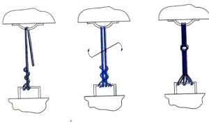
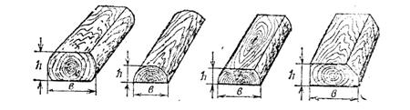
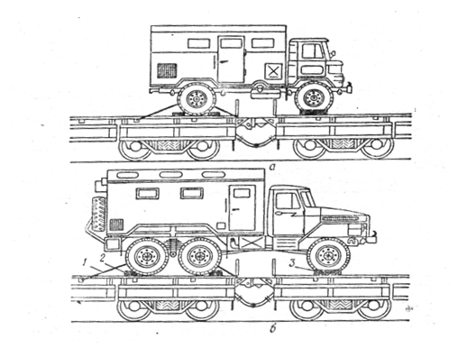

2. Подготовка машины к погрузке
3. Порядок размещения и закрепления колесной машины на платформе
Способ закрепления двухосных машин
Способ закрепления трехосных машин
Способ закрепления четырехосных машин
Способы закрепления над сцепом двух и трехосных машин
4. Подготовка погруженных машин к перевозке
По второму способу закрепление техники массой до 24 т производят четырьмя проволочными (табельными) растяжками и массой от 24,1 до 40 т восемью растяжками.
Проволочная растяжка (увязка, обвязка) - это туго натянутые, скрученные нити проволоки, как показано на рисунке ниже, соединяющие увязочные устройства вагона и машины, а также машины между собой. Растяжки закрепляют на машинах за буксирные крюки или петли, мосты, рамы, и другие детали которые обеспечивают прочность закрепления и не могут быть повреждены растяжками или вызвать их срез.

На колесных машинах, установленных над сцеплением вагонов, растяжки закрепляют за задние или за задние и средние мосты.
В зависимости от массы машин и их конструктивных особенностей колеса подклинивают четырьмя или восемью упорными деревянными брусками, которые укладывают длинной стороной поперек платформы и плотно подгоняют под колеса.
Табельные растяжки (стропы механизированные) могут быть тросовые и цепные, показанные на рисунке ниже.
Табельная растяжка представляет собой цепь или трос, снабженные натяжным устройством (талрепом) и двумя звеньями, которые закрепляют за увязочные устройства вагона и машины.
Упорные бруски, показанные на рисунке ниже, (полу кругляк, четвертушки поленьев, обрезки шпал и др.) препятствуют перемещению колесных машин вдоль платформ.

Рис. Упорные бруски
Размеры брусков устанавливают в зависимости от диаметра колеса приведены в таблицах ниже.
|
Размеры бруска мм (не менее) |
Диаметр колеса, мм |
|||||
|
Менее 500 |
500-799 |
800-1099 |
1100-1399 |
1400-1599 |
1600 и более |
|
|
высота |
40 |
50 |
75 |
100 |
135 |
150 |
|
ширина |
100 |
100 |
120 |
160 |
200 |
220 |
|
|
|
|
|
|
|
|
Длина бруска при прилежании его длинной стороной к колесу должна быть несколько больше ширины колеса (при двухскатных колесах больше ширины обоих скатов).
Для закрепления колесных машин допускается применение упорных брусков прямоугольного сечения, составленных из двух частей по высоте.
Боковые бруски наряду со скобами препятствуют поперечному перемещению при некоторых способах закрепления колесных машин, когда борта платформ не могут быть закрыты, а также при расположении их над сцеплением платформ.
Как правило, колесные машины перевозят на платформах, борта которых закрыты. Если по конструктивным особенностям машин боковые борта платформы не могут быть закрыты, то каждую колесную машину дополнительно закрепляют от поперечного смещения боковыми брусками, которые прибивают к полу платформы с наружной (внутренней) стороны всех колес. Каждый брусок прибивают четырьмя гвоздями диаметром 6 мм, длиной 200 мм при массе колесной машины до 12 т и восемью гвоздями при массе машины - от 12 до 40 т.
Количество гвоздей, которыми прибивают упорные бруски, количество растяжек и число нитей проволоки в них определяют по таблице ниже.
Таблица
|
Масса единицы техники, т |
При креплении гвоздями |
При креплении скобами |
|
|
Число нитей проволоки диаметром 6 мм в растяжке |
Число гвоздей на один упорный брусок |
Число нитей проволоки диаметром 6 мм в растяжке |
|
|
До 3 включительно |
2 |
4/2* |
2 |
|
≥ 3,1 до 6,0 вкл. |
4 |
8/4 |
4 |
|
≥ 6,1 до 9,0 вкл. |
4 |
16/8 |
4 |
|
≥ 9,1 до 12,0 вкл. |
6 |
-/10 |
6 |
|
≥ 12,1 до 15,0 вкл. |
8 |
-/12 |
6 |
В случае если по таблице получается, что в один упорный брусок необходимо забить 12 гвоздей и более, то вместо четырех брусков целесообразно применить восемь брусков.
2. Подготовка машины к погрузке
Для закрепления колесной машины на платформе перед погрузкой необходимо:
— тщательно очистить от грязи, а зимой от снега и наледи;
— проверить исправность тормозной системы;
— привести в положение для транспортирования по железной дороге в соответствии с инструкцией по эксплуатации.
3. Порядок размещения и закрепления колесной машины на платформе
Колеса двухосных машин массой до 24 т подклинивают с наружных (внутренних) сторон четырьмя упорными брусками и производят закрепление четырьмя проволочными (табельными) растяжками.
Рис. Закрепление двухосных автомобилей деревянными упорными брусками и проволочными (табельными) растяжками.
У трехосных машин колеса переднего моста подклинивают брусками с обеих сторон, а колеса среднего и заднего мостов с наружных сторон.
Закрепление трехосных машин массой до 24 т производят четырьмя проволочными (табельными) растяжками и массой от 24,1 до 40 т восемью растяжками.

Рис. Закрепление трехосных автомобилей деревянными упорными брусками и проволочными (табельными) растяжками.
При закреплении четырехосных машин упорными брусками подклинивают - колеса всех мостов.
Закрепление четырехосных машин массой до 24 т производят четырьмя проволочными (табельными) растяжками и массой от 24,1 до 40 т восемью растяжками, как показано на рисунке ниже.

Рис. Закрепление четырехосных автомобилей деревянными упорными брусками и проволочными (табельными) растяжками.
При размещении машин над сцеплением платформ у двухосных машин подклинивают упорными брусками с обеих сторон колеса заднего моста, а у трехосных машин с наружных сторон колеса среднего и заднего мостов.
Параллельно колесам переднего моста с наружных (внутренних) сторон на расстоянии 20 – 30 мм от боковой поверхности покрышек укладывают продольные направляющие бруски, каждый из которых прибивают при массе машины до 12 т четырьмя гвоздями диаметром 6 мм и длиной 200 мм, при большей массе шестью гвоздями.
Закрепление машин над сцепом вагонов производят четырьмя проволочными (табельными) растяжками, как показано на рисунке ниже.

Рис. Закрепление двух и трехосных автомобилей расположенных над сцеплением платформ с помощью растяжек, упорных и продольных направляющих брусков: а – двухосный автомобиль; б – трехосный автомобиль; 1 – растяжка; 2 – упорный брусок; 3 – продольный направляющий брусок
4. Подготовка погруженных машин к перевозке
После размещения военной техники на железнодорожном подвижном составе необходимо:
- закрепить военную технику от возможных продольных и поперечных смещений;
- включить стояночные тормоза, низшую передачу;
- выключить передний ведущий мост у автомобилей, установленных над сцеплением вагонов;
- проверить крепление погруженной военной техники, съемного оборудования (огнетушителей, лопат, лестниц и т.д.) и запасных колес;
- в случае неисправности стопоров и фиксаторов все вращающиеся, выступающие части военной техники необходимо закрепить в положении по-походному проволочными растяжками;
- проверить соответствие положения военной техники габариту погрузки или требованиям к перевозке негабаритных грузов;
- закрыть и опломбировать люки, двери кабин, предварительно подняв стекла;
- в холодное время слить воду из системы охлаждения;
- закрыть и закрепить запорами борта платформ; в случаях когда ширина техники не позволяет закрыть боковые борта платформ, закрепить их в открытом (опущенном) положении (металлические борта закрепить за кольца на продольных балках, а при отсутствии колец — увязать проволокой);
- произвести (при необходимости) маскировку погруженной военной техники.
Первый и второй способы применяются при перевозке в составе воинских эшелонов и транспортов колесных машин массой отдельных единиц до 40 т. при наличии исправной тормозной системы, кроме того, второй способ применяют для закрепления машин массой до 10 т. без тормозной системы.